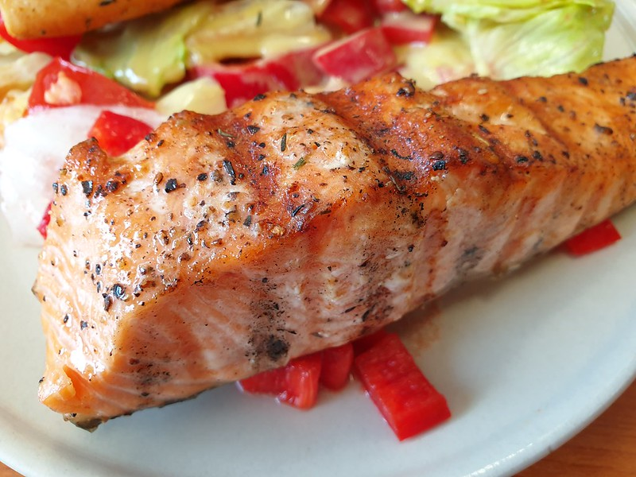

Grilled Salmon

Description:
A delicious salmon recipe that even picky eaters will savor.
The soy sauce and brown sugar marinade will be a great compliment.
Ingredients:
- 1 ½ pounds salmon fillets
- lemon pepper to taste
- garlic powder to taste
- salt to taste
- 1/3 cup soy sauce
- 1/3 cup brown sugar
- 1/3 cup water
- 1/4 cup vegetable oil
Steps:
- Gather all ingredients.
- Season salmon fillets with lemon pepper, garlic powder, and salt.
- Stir soy sauce, brown sugar, water, and vegetable oil together
in a small bowl until sugar is dissolved. Place fish in a
large resealable plastic bag; add soy sauce mixture, seal, and
turn to coat. Refrigerate for at least 2 hours.
- Preheat an outdoor grill for medium heat and lightly oil the grate.
- Place salmon on the preheated grill, and discard marinade.
Cook salmon until fish flakes easily with a fork, about 6 to 8 minutes per side.
- Serve and enjoy!
Recipe adapted from Allrecipes.com
Home